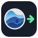

RYM to SpotifyConnect your own Spotify app
A one-time setup to turn RYM albums into Spotify playlists. Your Client ID stays in this browser.
You’ll need Spotify Premium to own a personal developer app. Copying chart links works without setup. Spotify requirements ↗
Your existing Spotify connection uses the original shared app. It still works for approved accounts. To use your own app, follow the steps below.
-
Create your Spotify app
Sign in with the Spotify account you want to use for playlists. Choose Create app, name it RYM to Spotify — personal, and add a short description. Select Web API if asked. Use the redirect URL in step 2 when the form asks for it.
Open Spotify Developer Dashboard ↗ -
Add this redirect URL
Paste this exact URL into your app’s Redirect URIs. If the app already exists, open Settings → Basic Information. Add the URL and save the settings.
Use the whole URL, including the ending slash if shown. -
Save your Client ID and connect
Find Client ID in your Spotify app’s settings and paste it below. You don’t need the Client Secret.
Loading Spotify settings…
In Spotify’s login window, approve access to create private playlists. If you see Invalid redirect URI, check that step 2’s URL is saved exactly.
-
Try one album
Check that Spotify lets the extension fetch album tracks before making a larger playlist. This test won’t create a playlist.
Leave empty to test a sample album.You’re ready. Return to your RYM chart, choose All tracks from albums, then select Create playlist.
If Spotify returns “access denied” (403), check that the app owner has Premium and the account signing in is approved under the app’s Users Management. Your personal app remains subject to Spotify’s development limits.